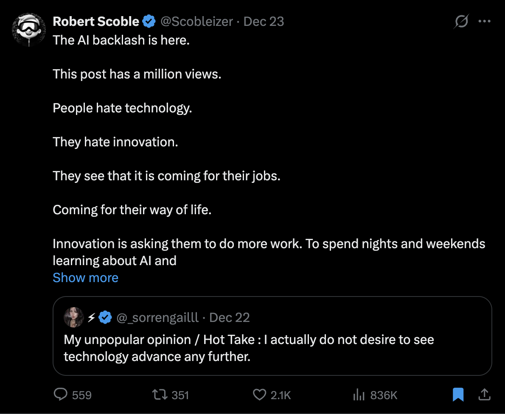
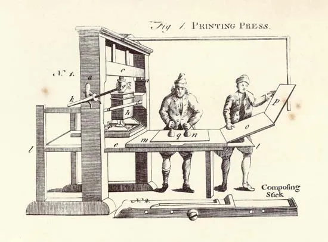
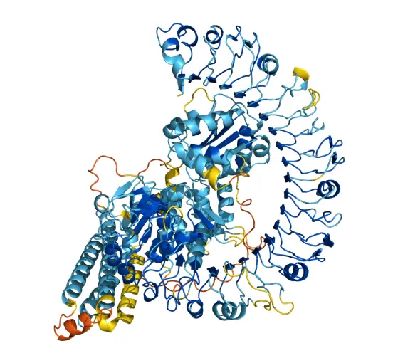

你大约有 24 个月的时间来学会这些技能
看这封信的视频版：YouTube。听音频版：Spotify。
这个月，有什么东西变了。
我知道每个人都会这么说……这些年来，所有人都在说 AI 会改变一切，大多数人已经开始无视它了。但最近确实有东西变了。工具变强了，人们变得更愤怒了，而那些试图找到 AI 有用应用场景的人，开始拉开了和所有人的差距（我在我的开发团队身上亲眼见证了这一点）。

这只是我信息流里淹没而来的众多例子之一。
每当出现这样的转变，同样的模式就会出现。三类人会暴露出他们的本色。
1) 抗拒者
他们把自己的身份绑定在"事情过去是怎么做的"上。任何新工具都被他们看作对自我认同的威胁。那些尖叫"任何使用 AI 的人都是坏人"的艺术家，那些声称好文字无法被替代的写作者（包括我自己），当然还有那些一边愤怒地发帖哀悼创造力的死亡、一边拒绝学习新工具如何运作的"创造者"。
如果可以，避开这些人。而如果你就是其中之一，保持开放的心态。
2) 观望者
他们看得到变化正在发生，却告诉自己它会"吹过去"。他们埋着头，因为大半生以来，工作、人生方向、生存能力都依赖别人。他们不知道还有别的活法。
问题在于开始太晚的代价。
在以前的转变中，你可以等几年再追上，差距是线性的。但 AI 不一样，差距是指数级的。今天开始实验的人，每个月都在让技能复利（我很讨厌显得耸人听闻，但我亲身经历过）。等到 2027 年才动手的人，会一觉醒来发现入门级岗位已经消失，而其他人已经领先好几年。
3) 好奇者
他们保持好奇，去实验、去建造，弄清楚如何以自己的方式采用新玩法——既不美化过去，也不恐惧未来。他们理解新事物在变得有用之前有时间差，就像任何技能一样，要让它对你有用，需要反复试错。
成为第三类人一直都很重要，因为意义的主要驱动力是挣扎、地位和好奇心。
而现在，正是成为第三类人的好时机——也许是最好的时机。
在这封信里，我想分享 4 个想法：它们可能会改变你对 AI 的看法，告诉你未来 1-2 年该学什么技能，以及那个唯一重要的决定——如何掌控你的人生。
一、为什么这次看似一样，实则不同
人们表现得好像技术颠覆是新事物。
它不是。
印刷术让抄写员过时了。古腾堡之前，书商雇佣数十名训练有素的工匠手抄手稿，那是需要数年才能掌握的技能。他们还没反应过来，这套技能就一文不值了。一台印刷机一个工作日就能产出 3600 页。拒绝适应的抄写员消失了，学会操作新机器的人繁荣起来。
取代抄写员的，是学会了使用机器的人。

同样的模式在工业革命中重演。手工织工抗议，有人甚至砸毁机器。与此同时，机械化纺纱把每个工人的产出提高了 500 倍。出现了新的职位：印刷工、排版工、机器操作员、工程师。工作的性质变了，工作本身没有消失。
1814 年，伦敦《泰晤士报》偷偷装了一台蒸汽印刷机。他们在夜里印 11 月 29 日那一期，因为排字工人发誓要毁掉任何威胁他们饭碗的机器。新印刷机每小时产出 1100 页，而不是 250 页。排字工人输了，报业爆炸式增长，识字率攀升。
这个模式是：技能向上抽象。
抄写员变成了编辑，手工织工变成了机器操作员，排版工变成了设计师。每一波技术都把人类推向更高的操作层级。
受卡尔·波普尔影响的物理学家大卫·多伊奇把人类称为"通用解释器"——在可能性范围内，任何可理解的东西我们都能理解。我们通过猜想与批评来创造知识：试错，猜测与纠正。这就是我们适应世界的方式。
那些为 AI 担心的人认为它会让人类变得无关紧要。但只要有正确的知识，人类能理解或创造的东西没有上限。工具在变，驾驭工具的能力不会消失。
那么，这次有什么不同？
时间尺度被压缩了。
印刷术花了数十年才传遍欧洲，工业革命展开在一个世纪里。AI 比它们都快。
很多人仍然认为这只是空谈，因为"AI 没那么惊艳"。
那是因为大多数人的大脑还停留在追求一夜暴富、廉价多巴胺的模式里，指望 AI 用一次查询解决所有问题。它不是这样运作的。

2020 年，DeepMind 的 AlphaFold 解决了困扰生物学家 50 年的蛋白质折叠问题。蛋白质是生命的分子机器，它们的形状决定功能。知道蛋白质如何折叠，就意味着理解疾病如何运作、药物如何靶向它们。过去博士生要花几个月完成的实验工作，现在几分钟就够了。
采用者和观望者之间的差距，每个月都在复利。今天开始实验的人，两年后会判若两人；等待的人，会花那两年不断掉队。
历史的模式清清楚楚。问题是你看不看得到。
二、技能正在向上抽象一层
我说过我永远不会用 AI 写作。我是认真的。写作是我的手艺，是我思考的方式。把它外包出去，感觉就像把我的脑子外包出去。
但随着我在这项技能上积累得越来越多——不再只是把它当成一个"打字提问的盒子"——有些东西变了。当然，让 AI 在没有我任何思考、方向或想法的情况下生成整篇文章，依然让我起鸡皮疙瘩。但我找到了一个流程：AI 处理大量的劳动，而思考的掌控权留在我手里。就我而言，我认为这就是写作的未来。要完整解释它是如何运作的，我可能需要一整封甚至两封信，因为它真的是一项技能，而且我比手动把字一个个敲上屏幕更享受它。我可以在更高的层面思考：我想让这篇文字产生什么影响。
做个言不达意的简版解释：我先列出想写的论点和想法的大纲，它可以相当详尽。然后我实际上是在"不担心语法"地写这篇文章。我把自己的书和过往内容喂进上下文，让 AI 理解我如何思考、拥有我的核心世界观和哲学。然后我展开这些想法，同时 AI 和我一起研究。它调取信息、浮现出那些我知道并理解、但我自己花几个小时也找不到的模式——因为我记不住教科书级别的信息。这实际上正在成为我们在 Eden 里构建的研究功能的基础。之后，我梳理草稿、做删减，感觉某处死了就改方向，感觉某处活着就再推一把，在觉得不够的地方写下我的"批注"——这让我对主题思考得更深。
纸上的字依然是我的。但我的工作变了，出乎意料的是，我写得比任何时候都多。它像一个小游戏，我想一直玩下去。
对还不知道的人：我做了一个关于我如何使用 AI 的迷你课程。它不包含我现在正在做的这些，但如果还没"感受"过 AI 能做到什么，我仍然觉得它会让大多数人震惊。
这是每一次技术转变的同一模式。抄写员抄写字母，然后印刷术让抄写变得无关紧要，"编辑"这个职位出现了——他们的工作是决定什么才值得被印出来。技能向上抽象了一层，但手艺留了下来。
写作现在正在经历同样的转变。
任何人都能在 30 秒内生成 2000 字。称职但毫无记忆点的写作，现在 20 美元/月的 ChatGPT 订阅就能买到。基准线被淹没了。如果你的写作本来就只是平均水平，那你现在是在和无穷的平均竞争。
但天花板没有动。让写作变得伟大的东西没有变：思想的原创性、一个绝不会认错的声音、以及让人看见他们从未见过的东西的能力。
平均与伟大之间的区别，是品味。
未来属于能从噪音中过滤出信号的人。当任何人都能生产任何东西时，"选择什么值得存在"就成了那项技能。
而当摩擦力消失时，品味反而更难培养。手写是慢的，慢逼着你思考。当 AI 移除了那种摩擦，你必须自己提供那种摩擦曾经替你提供的判断力。
差距就在那里打开。
我告诉你这些，是因为大多数人只试一次 AI，得到平庸的输出，就断定它不行。这就像从自行车上摔下来，然后得出结论：自行车不行，或者它是个坏产品。
AI 有技能曲线。入门门槛看起来很低，因为谁都会敲提示词。但要让 AI 发挥巅峰能力，需要实验：失败、调整、再试，需要智慧（在这里讨论过），需要一直实验，直到找到契合你思考方式的流程——而你的思考方式是无限独特的。
三、2026 年到底该学什么
我授权你无视所有"2026 年最值得学的技能"列表。
没有任何一项技能能救你。但快速学会任何技能的能力，可以。
Devon Eriksen 谈到了"解放性技艺"（the liberating arts）——自由的人为了代表自己行动，一直需要的能力：
- 逻辑：从已知事实中推导出真相
- 统计学：理解数据意味着什么
- 修辞学：说服，以及识破说服手法
- 研究：为未知主题收集信息
- 心理学：分辨自己和他人真正的动机
- 投资：管理与增长资产
- 自主性：决定追求什么，并在未经许可的情况下行动
这些严格来说不一定是技能，而是你通过做"需要它们"的事培养出来的能力。
有三件事会同时调用它们全部，我认为是进入"失业是大威胁"的时代的关键：
1) 造一个属于自己的东西，放到人前。
一个产品、一个项目、一件署着你名字的作品。它逼出修辞学，因为你必须说服别人在乎它；逼出实用的心理学，因为你必须理解别人真正想要什么，而不是你以为他们应该想要什么；逼出自主性，因为你必须行动（尤其是迭代），无需许可。你从现实的反馈中学到这些，不是从书里。
我相信，我们正在见证工匠的回归，但从一个全新的视角。
2) 公开、持续地写作，哪怕是用 AI 一起写。
写作是压缩后的思考。它逼出逻辑，因为弱论证会在纸面上垮掉；逼出研究，因为你无法假装深度；它暴露你想法中单薄之处；并且它积累一项会复利的资产（受众、声誉、工作证明）。
坦白说，我到现在也没完全确定我对这件事的感受：大多数人都会用 AI 写作。但依然会有熟练和不熟练的写作者。而 AI 有一种非常可识别的味道，大多数人已经厌烦了。就我而言，我认为熟练写作与不熟练写作的区别，在于思想的密度、论证的质量、概念的合成、视角的新颖性，而不是把字放上纸面的劳动。
如果你只是说"给我生成一封关于生产力的 newsletter"，那你还有很多要学的。
3) 用 AI 做你以前做不到的事，而不只是你以前不想做的事。
大多数人用 AI 逃避工作。优势属于那些用 AI 去尝试一个人过去不可能完成的工作的人：过去要花几周的研究，横跨几十个来源的综合。问题不是"我怎么少做点？"而是"现在我能做什么我以前做不到的事？"
对于效用型任务，随便你怎么用 AI。
对于意义型任务，非常小心：别把 AI 当作逃避挣扎和技能发展的方式，因为那会迅速削弱你能从中获得的意义。
四、唯一重要的问题
读完这封信，我希望你质疑三件事：
- 你拥有的每一项技能。
- 你不加思索反复重复的每一个习惯。
- 你默认度过时间的每一种方式。
如果按照你现在的设置，余生每一天都做这些同样的事（这是人性使然），这会通向一个你想要的未来吗？
认真想想这件事，对照一下这个世界变化的速度。
你是在最前沿，还是安于为普通人准备的那种平庸人生？
有某件你能做的事，不会被完全替代。
你的品味、你的判断、你看待问题的方式的某种组合。
你的工作是找到那件事。你不会通过等待或抗拒找到它。你必须在你所知世界的边缘做实验，必须发现你的边缘实际上在哪里。
在未来 12-36 个月想明白这一点的人，会被看成另一个物种。指数进步的果实，属于那些扑向风险、在过程中把一切想明白的人。
一句话总结：差距是指数级的：抗拒者和观望者掉队，好奇者复利。技能向上抽象一层，品味成了平均与伟大之间唯一的区别——造自己的东西、公开持续地写作、用 AI 做以前做不到的事，然后在 12-36 个月内找到那件不会被完全替代的事。
如果你想继续读：如何在 1 天内修复你整个人生
谢谢阅读。
—— Dan